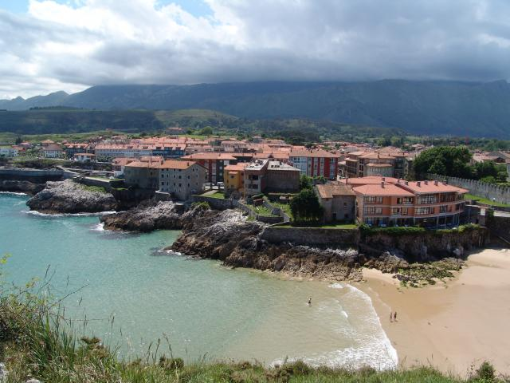
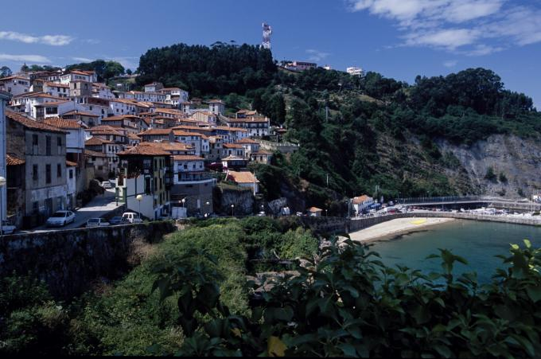
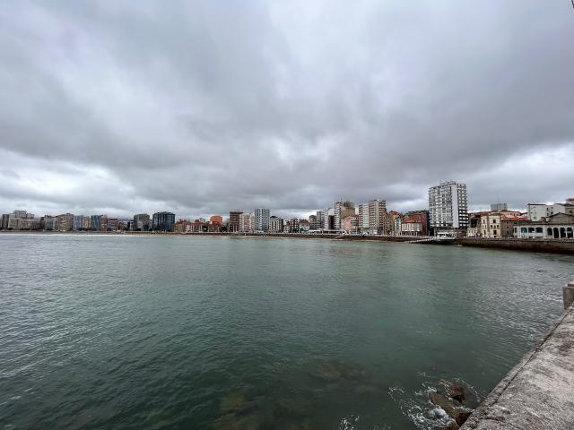
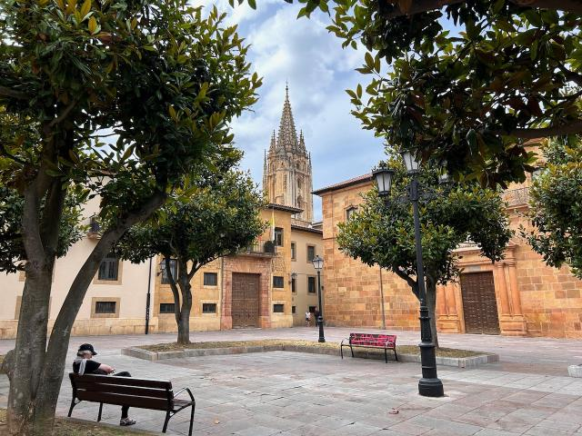
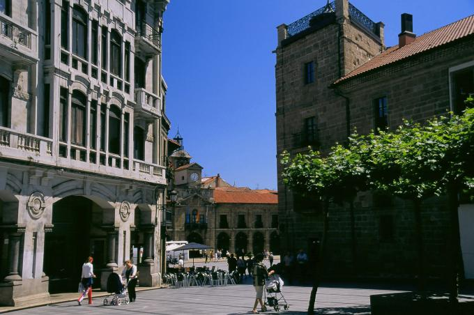
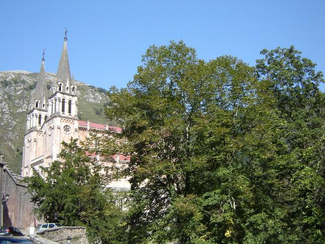
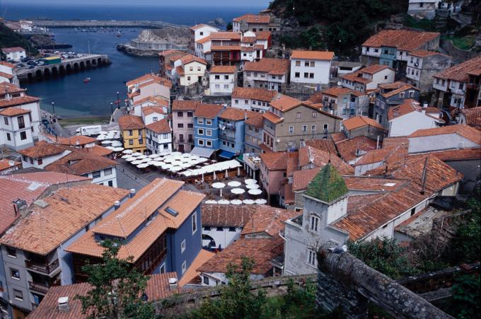
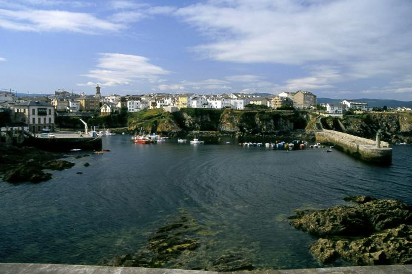

Llanes (Costa de Cine)

¿Qué se rodó aquí?
El Orfanato y El Abuelo
La zona cinematográfica más concentrada de la costa asturiana
AventurAstur nace con el objetivo de fusionar el turismo activo con la gran pantalla. Asturias ha sido escenario de innumerables rodajes cinematográficos y televisivos a lo largo de los años. Nuestro proyecto ofrece rutas y experiencias de ocio al aire libre diseñadas para recorrer estos enclaves de película, permitiendo a familias, amigos y entusiastas del cine vivir una aventura única descubriendo los paisajes asturianos.
Cada recorrido combina paseos por la costa y el interior con paradas en escenarios reales de películas y series. Están pensadas para hacer a tu ritmo, conectando naturaleza, patrimonio y cultura audiovisual en distintos puntos de Asturias.

El Orfanato y El Abuelo
La zona cinematográfica más concentrada de la costa asturiana

Doctor Mateo
Una ruta seriéfila ya hecha y con mucha atmósfera marinera e inconfundible

Fuga de cerebros
Arquitectura impactante y un formato urbano muy cómodo para el visitante.


Vicky Cristina Barcelona
Una escapada urbana de cine sin necesidad de recorrer pueblos.


Volver a empezar
Una ruta para quienes disfrutan del cine clásico español.

O que arde
Un ramal occidental menos evidente de la ruta.
¿Tienes alguna consulta o aportación? Contáctanos a través de nuestro teléfono: 985661144
Lunes a viernes: 09:30 - 14:00 y 16:30 - 19:30
Sábados (salidas y rutas): 10:00 - 14:00
Si necesitas información sobre nuestras rutas, horarios o disponibilidad, no dudes en llamarnos. Estaremos encantados de ayudarte a planificar tu aventura cinematográfica en Asturias.